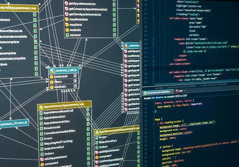
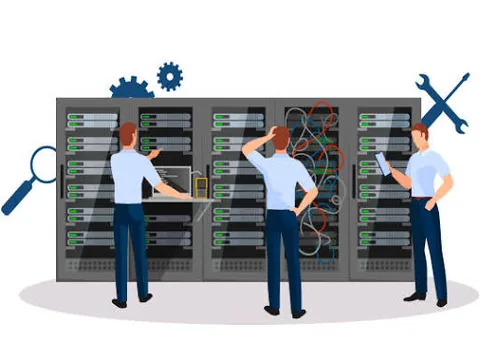
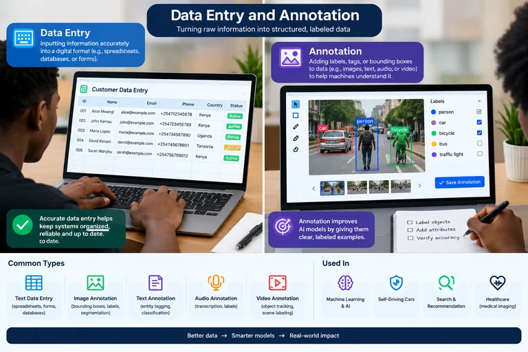
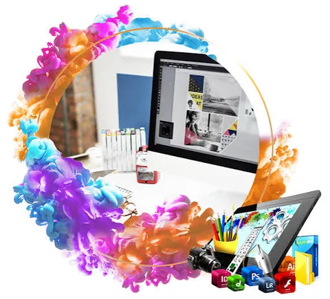
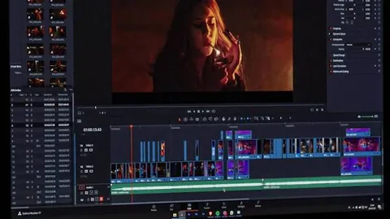

Learn
Understand the fundamentals.
BSc IT Student • Software Developer in Training • Builder
I turn what I learn into practical digital systems—then document the decisions, evidence and next steps.
About
I am a BSc Information Technology student focused on turning what I learn into practical software, information systems and digital tools. My portfolio is intentionally evidence-based: completed work is shown as completed, work in progress is labelled clearly, and future ideas remain future ideas.
BSc Information Technology student in Kenya.
Web interfaces, system designs, database-oriented projects and digital tools.
Learn → Build → Test → Document → Improve.
Development philosophy
A practical engineering loop that keeps learning connected to evidence.
Understand the fundamentals.
Turn concepts into working systems.
Find what breaks and verify behavior.
Explain decisions and evidence.
Use each project to become better.
Skills → evidence
No percentage bars. Each area points toward projects, practical work or an honest learning status.
HTML, CSS and JavaScript used in WALLACE.DEV.
SQL/database learning is being connected to the Database System and information-system work.
Practical networking, Windows and IT-support knowledge strengthened through study and hands-on troubleshooting.
Foundational areas currently being explored; presented as learning, not mastery.
AI-assisted workflows, automation concepts and data work are areas of active exploration.
Technology stack
These labels describe exposure and current development activity—not mastery.
Featured projects
 LIVE
LIVEPersonal technology portfolio
An evolving portfolio designed to present real projects, technical growth and inspectable evidence without inventing experience.
 IN DEVELOPMENT
IN DEVELOPMENTProduct project
An active project exploring a more systematic way to help people evaluate remote-income opportunities. Only verified implementation evidence is presented as completed.
What I can build
Core areas are closest to current project work; growing areas are under active study; digital services represent practical supporting skills.
Responsive websites and browser-based interfaces backed by current portfolio work.

Designing structured data and system concepts, with implementation evidence added as projects are built.

Troubleshooting, connectivity, Windows and infrastructure practice.
Security fundamentals and responsible system practices under active study.
Cloud concepts and automation workflows currently being explored.
Experimenting with AI-assisted workflows and practical product ideas.

Structured data handling and careful annotation workflows.

Visual communication and digital content design.

Editing and preparing digital video content.
Learning & development
The dashboard describes where my attention is going, not a numerical skill score.
Restructured the portfolio toward a multi-page evidence platform, dedicated project pages and responsive image delivery.
Currently open to
I am interested in roles and collaborations that match my current level and give me room to grow through real work.
GitHub / source evidence
The public portfolio-website repository is verified on my GitHub profile. Other projects will receive repository links only when their code is actually published.
Contact
Use the form to send a message through the WALLACE.DEV backend, or contact me directly.
Languages: English • Swahili • Arabic (no proficiency levels claimed)